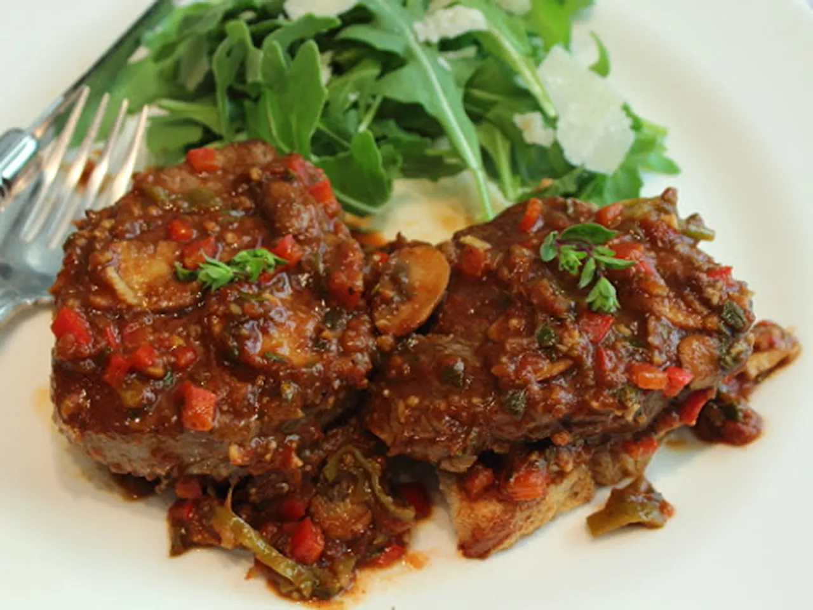

Steak Pizzaiola

Description
There are hundreds of ways to make steak pizzaiola, from versions featuring slowly braised tough cuts of beef to quickly seared tenderloin medallions, like I used here. The one thing most people agree on is that you should use really fresh, very sweet, vine-ripened tomatoes. Serve on top of toasted bread with mozzarella cheese.
Ingredients
- 1 pound beef tenderloin steaks, cut into 4 medallions
- slat and pepper to taste
- 1 tablesppon olive oil
- 1 cup sliced fesh mushrooms
- 2 teaspoons butter
- 1 pinch salt
- 1 cup sliced sweet and hot peppers
- 4 cloves garlic, crushed
- 1/2 cup white wine
- 1.4 teaspoon dried oregano
- 1 cup tomato concasse(see Recipe Tip for the recipe link)
- 2 tablesppon balsamic vinegar
- 2 tablespoons chopped fresh oregano
- 1 teaspoon balsamic vinegar
- 1 pinch red pepper flakes
Steps
- Season steak medallions with salt and black pepper on both sides.
- Heat olive oil in a large skillet over high heat. Add steaks and cook until browned, about 2 minutes per side. Transfer to a plate. Reserve oil in skillet.
- Place mushrooms and butter into the skillet and season with salt; cook and stir until mushrooms are softened and beginning to brown, 5 to 6 minutes. Reduce heat to medium; add peppers and cook and stir until softened, about 2 minutes. Stir in garlic and cook for 1 minute. Pour in wine and sprinkle in dried oregano. Increase heat to medium-high and cook until the wine is nearly evaporated, about 3 minutes.
- Stir tomato concassé into the mushroom mixture and simmer until tomato is softened, 3 to 4 minutes. Add fresh oregano, balsamic vinegar, and red pepper flakes; stir to combine. Adjust salt and black pepper to taste.
- Place steaks back into the skillet with the mushroom mixture and cook until warmed through and cooked to desired doneness, 4 to 10 minutes.